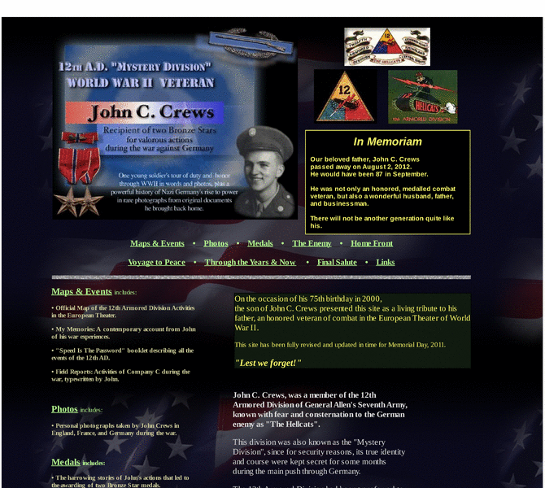

Previewing: John Crews - 12th A.D. Mystery Division - WWII Veteran Previewing: John Crews - 12th A.D. Mystery Division - WWII Veteran 
Use the left/right red arrow controls to navigate through this ring - Click the preview image to visit the member site.

One young soldier’s tour of duty and honor through the European Theater with the Hellcats under Patton and Allen, in words & photos, plus a powerful history of Nazi Germany’s rise to power in rare photographs from original documents John brought home. Battle map, Company reports, historic newsletters, and much more.
John Crews - 12th A.D. Mystery Division - WWII Veteran owned by:
 crewsnewlight crewsnewlight
A member of the original webring since 04/18/2011.
|
|